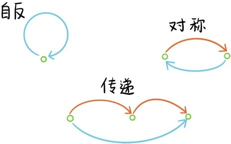
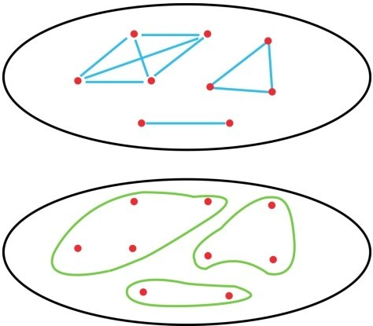
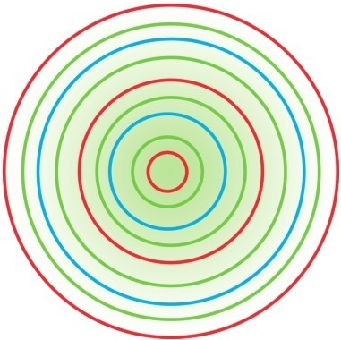
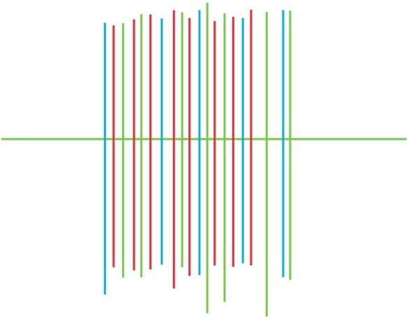
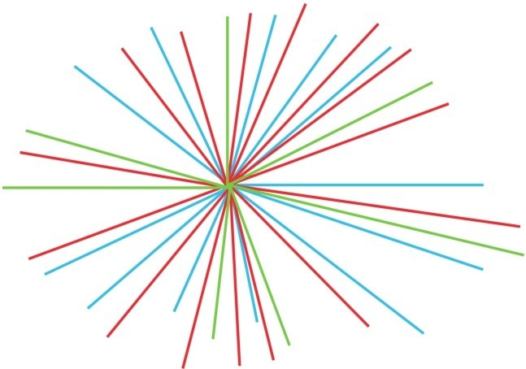

——从现实世界到数学世界
在日常生活中，经常使用“关系”一词，比如父子关系、上下级关系、同事关系、兄弟关系、情侣关系、同学关系、师徒关系等。数学也有许多关系，比如整除关系、大小关系等。如何用集合语言来描述关系呢？
如果将所有人构成的集合记作A，那么我们是如此定义父子关系的：
a∈A和b∈A具有父子关系⇔a是b的爸爸。
假如a是b的爸爸，那么b就肯定不是a的爸爸，所以如果a和b具有父子关系，那么b和a就不具有父子关系，请注意数学上的描述和日常用语的区别。当我们讲一个集合中元素的某些关系的时候，总是针对集合中的某两个元素构成的有序对(a,b)而言的，因为次序很关键。再以大小关系<为例，3<5成立，但5<3不成立。
注意有序对(a,b)可以看成是集合A与它自身的乘积A×A中的一个元素。因此一个集合A中的关系就是定义为A×A的一个子集ℜ⊆A×A。a∈A和b∈A具有关系ℜ当且仅当(a,b)∈ℜ，也将(a,b)∈ℜ记作aℜb。比如实数的<关系就是R×R的子集
正整数的整除关系就是Z+×Z+的子集
每一个函数，比如y=x2，都定义了R中的一个关系ℵ，对应的R×R的子集正是函数的图象，因此3ℵ9和-1ℵ1都成立，而2ℵ3不成立，因为22≠3。更一般地，每个关于x与y的方程，比如x2+y2=2，都定义了R中的一个关系，对应的R×R的子集正是方程的图象。每个关于x与y的不等式，比如x2+y≤y2，也都定义了R中的一个关系，对应的R×R的子集是
每个集合A到它自身的一个映射f:A→A都定义了集合A中的一个关系，对应的A×A的子集是接下来，我们介绍集合关系的3种性质。
称集合A中的一个关系ℜ是自反的，若对于每个a∈A，aℜa都成立。父子关系，朋友关系都不是自反的，一个人怎么可能是自己的爸爸，自己的朋友呢？实数的<关系也不是自反的，但≤关系就是自反的，因为a≤a总是成立的。正整数的整除关系也是自反的。
称集合A中的一个关系ℜ是对称的，若对于任何a,b∈A，aℜb可以推出bℜa。父子关系不是对称的，a是b的爸爸，根本不能推出b就是a的爸爸。实数的<关系和≤关系也不是对称的。但是朋友关系是对称的，a如果是b的朋友，那b自然也是a的朋友。
称集合A中的一个关系ℜ是传递的，若对于任何a,b,c∈A，aℜb和bℜc可以推出aℜc。父子关系不是传递的，a是b的爸爸，b是c的爸爸只能推出a是c的爷爷。但是如果我们在所有人构成的集合上定义后代关系⇒：a⇒b当且仅当b是a的后代，则后代关系⇒就是传递的，因为如果b是a的后代，c是b的后代，那么c自然也是a的后代。朋友关系不是传递的，朋友的朋友未必就是朋友。很容易看出，实数的<关系和≤关系都是传递的，正整数的整除关系也是传递的。

最后，我们重点介绍一类非常重要的关系——等价关系。假如全班同学分成4个小组，那么就可以在全班同学构成的集合中定义同组关系ℜ
aℜb⇔a同学与b同学在同一组。
很明显每个同学都和他（她）自己在同一组；若a同学与b同学在同一组，则b同学与a同学也在同一组；若a同学与b同学在同一组，b同学与c同学在同一组，则a同学与c同学也在同一组。所以同组关系ℜ是自反的，对称的，传递的。
同时具有自反性，对称性，传递性的关系称为等价关系。一般地，如果将一个集合A中的元素划分成若干组，那么同组关系就是一个等价关系。反过来，在集合A中定义了一个等价关系ℜ，就可以给出A的一个分组，彼此之间有关系的元素都归入同一组。下面第一个图中蓝色线表示等价关系，第二个图表示相应的分组：

在以点O为原点的坐标平面中定义这样一个等距关系ℜ
AℜB⇔OA=OB。
很容易看出，这是等价关系，相应的分组就是将整个平面分成点O和所有以O为原点的同心圆

如果在坐标平面中定义另一个关系ℵ
AℵB⇔A与B的横坐标相等
很容易看出，这是等价关系，相应的分组就是将整个平面分成与y轴平行或重合的直线。

如果在所有非零复数构成的集合中定义这样一种关系ℑ
这也是等价关系，相应的分组从坐标平面上看就是将挖去原点的平面分成从原点出发的射线（射线不含原点）。

提问时间
11.5.1 在实数集合R中定义两个关系ℜ，ℵ
aℜb⇔a-b是整数
aℵb⇔|a-b|<1
请判定哪个关系是等价关系。
11.5.2 对于每个正整数n，请在整数集合Z中定义一个等价关系，使得相应的分组将Z分成n组，每组都有无穷多个整数。
11.5.3 我们称集合A中的关系ℜ是全序关系，若
（1）对于任何a,b∈A，aℜb，bℜa，a=b这3个命题中恰好只有一个成立；
（2）ℜ具有传递性。
例如实数中的<关系就是全序关系。请在集合R×R中定义一个全序关系。